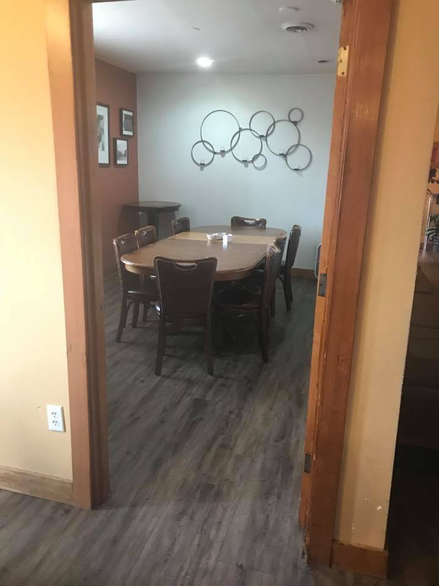

Tami Haskins, owner (FOX 13, 2019)
“A fair bang for their buck”
The Buttered Biscuit has been going strong at this Sumner location since 2010 — known first for the size of its plates.
When FOX 13 stopped by in 2019, owner Tami Haskins put it simply: “This is like people's place to come and feel paid attention to and special.”
Look up from your plate and you'll see it. A framed photograph of Hank and Jean hangs on the wall — “our best customers for years and years,” Tami said. After they passed, their son brought the picture in so they could keep watching over the place. Tami's own parents are pictured on the menu.
Then there's the cornbread with sweet butter — the thing that shows up in hundreds of Google reviews.